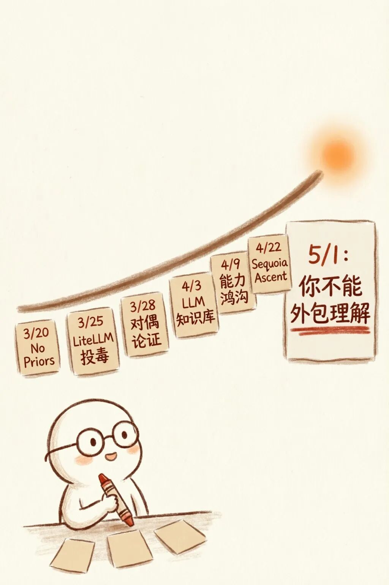
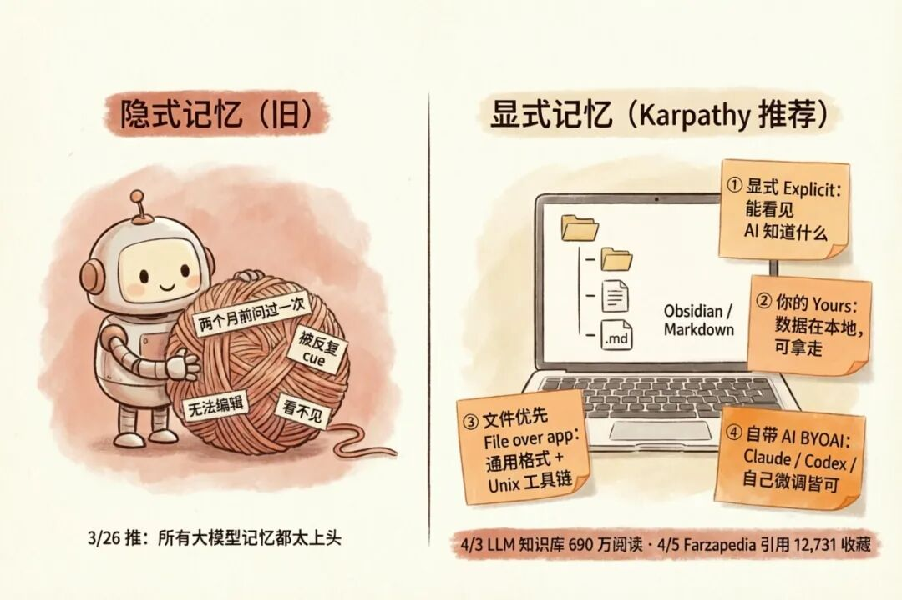
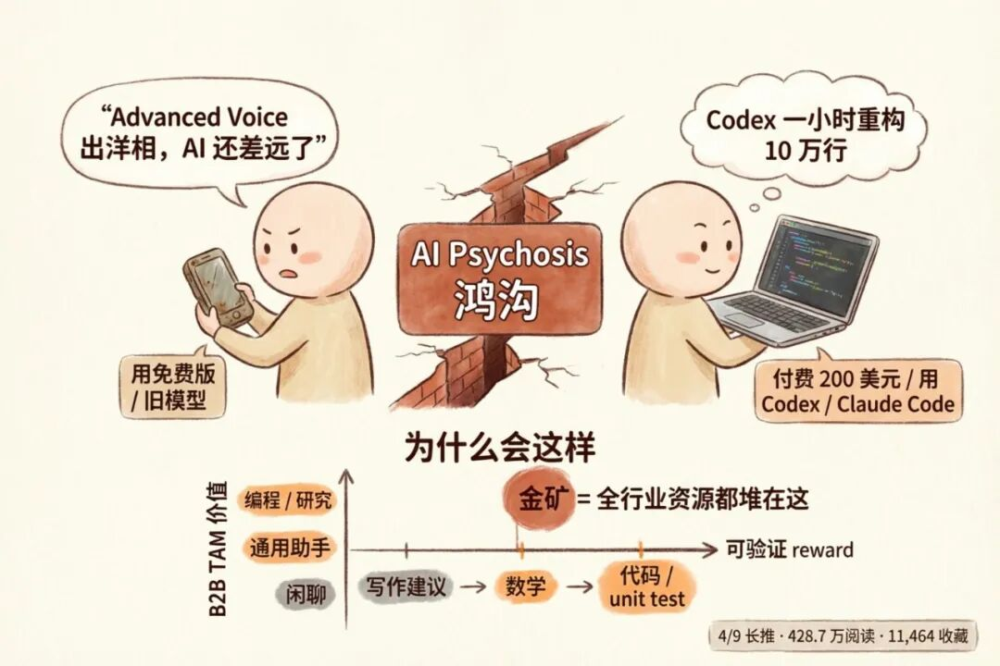
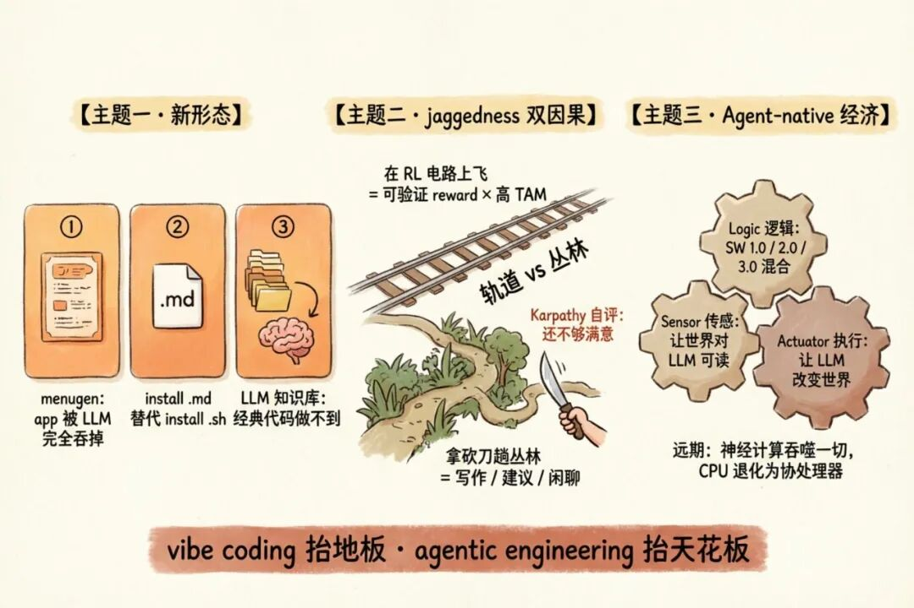

一次 No Priors（3 月）、一次 Sequoia AI Ascent（4 月底），加上他自己写的十几条推。把这些放在同一张图上看，能看到他这一两个月在做的不是"发表观点"，而是在搭一套完整论证。
5 月 1 日，Karpathy 转了 yacineMTB 的一句话：
"You can outsource your thinking, but you cannot outsource your understanding."
配文一行字："This is the quote I've been citing a lot recently."
这条引用一晚冲到 91 万阅读、27,311 个赞、6,627 个收藏。在他这两个月所有推里，赞数是第一。
但 91 万阅读不是因为这句话本身——同样的话 yacineMTB 自己 2 月 4 日发的时候，也才 102 万浏览。是因为他这两个月所有推、所有采访、所有转推，最后都收束到了这一句。
把时间倒回到 3 月 20 日他录 No Priors 那天，可以看清楚这条主线是怎么一点点搭出来的。
三月：一场访谈先把骨架立出来
3 月 20 日，Karpathy 第三次上 No Priors。Sarah Guo 在 3 月 21 日发主推时，把 12 段章节目录全列了出来，从 02:55 一直到 1:05:40。
这是一份很反常的主推数据：290.9 万浏览、7,643 赞、1,097 转发，13,158 收藏。bookmark / like 比值 172%，说明这条推不是被人扫一眼点赞的，是被人当成清单收着反复看的。
12 段章节目录本身就是一篇完整论证，挑四段最重要的展开：
02:55 What Capability Limits Remain —— 这是后来"peaky capability"论的源头。Karpathy 的判断是：编码、数学、研究三条线，模型已经能做多日量级的工作；但通用对话、写作、生活建议仍然卡在 RL 不可验证的"丛林"里。
同一个模型既能连贯重构 10 万行代码，也能告诉你该走路去洗车——这不是矛盾，是 RL 训练分布造成的能力地图本身就是锯齿状的。
15:51 Why AutoResearch —— 他给出了下一个会被 RL 攻克的高价值领域。研究流程本身大量是可验证的：实验跑得通、结果可重现、数值能对得上。这些都是天然的 reward signal。AutoResearch 不是科幻，是 RL 顺着可验证 reward 这条路必然会走到的下一站。
22:45 Relevant Skills in the AI Era —— 这一段的金句后来在 X 被反复转引："很多过去看似硬天花板的问题，现在更像是 skill issue。" 不是 AI 完美了，是怎么用 AI 比我们想的重要得多。
48:25 Open vs. Closed Source —— 他坦承前沿差距在拉大，但提了一个反向叙事：SETI@Home 式的分布式 AI 研究运动。几家大厂垄断 RL 数据分布的局面，开源生态可能需要新的协作形式来对抗。
剩下八段是这条骨架的各种侧面：Coding Agents 的精通形态、Second Order Effects、Model Speciation、Collaboration Surfaces、Jobs Market、Robotics、MicroGPT。
每一段都能单拎出来写一篇推，事实上他后面三周也确实是这么做的——把这次访谈里说过的每一段，都在推特上挑一个角度放大。
三月底到四月初：推特上把骨架填肉
3 月 25 日到 4 月 10 日，Karpathy 在推特上密集地发了一组论述长推。把它们对照 No Priors 章节看，几乎是一一对应的"扩展版"。
最大的一条爆款是 4 月 3 日的 LLM Knowledge Bases：690.1 万浏览、26,000+ 赞、3,448 转发、1,098 回复。这是他这一个月所有推里阅读最高的一条。
"最近我的 token 大头不再花在改代码上，而是花在 操纵知识——让 LLM 把多源、异构、非结构化的资料整理成个人化研究知识库。这是经典代码做不到的事。"
这句话直接对应 No Priors 的 32:30 Collaboration Surfaces：让世界对 LLM 更可读。在采访里这是一个抽象主张，到了推特变成了一个具体的、所有人都能立刻动手的工作流。
两天后他又转了 Farza 的 Farzapedia——把 2500 条日记、Apple Notes、iMessage 用 LLM 转成 400 篇个人维基。Karpathy 的这条引用本身就是一篇 long-form note tweet，129.7 万浏览、12,731 收藏，他在里面把"为什么这种个性化方式是对的"一次性给出了 4 条理由：

- Explicit：记忆是一个显式、可浏览、可手工编辑的 artifact——你能看到 AI 知道什么、不知道什么，而不是埋在某个看不见的 embedding 里
- Yours：数据在你本地，不在某个 AI 厂商的系统里，可随时拿走
- File over app：通用格式（图像 + Markdown），整套 Unix 工具链都能用，文中专门点名 Obsidian 是天然的查看工具
- BYOAI：可以接 Claude、Codex、OpenCode 任意一个；甚至可以拿一个开源模型在你的 wiki 上做 finetune，让 AI 在权重里"知道你"，而不只是临时看一眼你的数据
最后他点了一句态度："keep the AI companies on their toes!"——把这套个性化方案放在 OpenAI/Anthropic 那种"用得越多 AI 越懂你"的隐式记忆叙事的对立面。
为什么这么强调显式？3 月 26 日他还专门发过一条 271 万阅读的推，吐槽所有大模型的个性化记忆都"太上头"——两个月前问过一个话题，能被无限当成你的"深度兴趣"反复 cue。他猜测根源在训练阶段：上下文里给的东西通常都是相关的，于是模型形成了"必须用上"的偏置。隐式记忆的代价就是这种"上头"。

4 月 9 日的另一条 428.7 万阅读、20,592 赞、11,464 收藏的长推，直接把 02:55 那段 capability limits 论述完整搬了出来：
"去年用过免费版 ChatGPT 的人，被旧/弱模型塑造了印象，看到 Advanced Voice 出洋相就嘲讽 AI 还差远了；而付费 200 美元用 Codex / Claude Code 在编程/数学/研究里干活的人，亲眼看到模型一小时重构整个代码库。两群人在鸡同鸭讲。"
他给了一个机制级的解释：RL 对可验证奖励域有效，而这些域恰好也是 B2B 金矿，全行业资源都堆在那里，其余领域天然被冷落。
3 月 28 日还有一条 344 万阅读的推，是这一组里最反直觉的方法论：
"拿 LLM 打磨博文 4 小时，自我感觉良好；让它论证反方，结果被反方说服。要把 LLM 当 思考工具 而不是 说服工具，否则你只是在被自己的 echo chamber 越推越深。"
到这里，No Priors 的骨架已经被推特填得差不多了：诊断（4/9）、机制（4/9 后半 + 4/10）、新形态（4/3 + 4/5）、方法论侧的安全使用（3/26 + 3/28）。差的是把这些抽象到下一层。
四月底：Sequoia 把骨架升到框架

4 月 22 日左右，Karpathy 在 Sequoia AI Ascent 2026 又录了一场炉边对话，主持还是去年那个 Stephanie Zhan。Steph 4 月 29 日发推时给了一句精准的总结：
"vibe coding raised the floor. Agentic engineering raises the ceiling."
Karpathy 自己 5 月 1 日发了一条总结推确认了这次的三大主题。
主题一：LLM 不只是加速旧事物，而是开启新形态。
他给了三个具体例子：
- menugen —— 一个完全被 LLM "吞掉"的 app。输入图、输出图、整套交互全靠模型，没有传统代码。
- install .md skills 替代 install .sh scripts —— 不再写复杂 bash 脚本，把安装步骤用自然语言写出来，让 LLM 当智能解释器执行。LLM 能针对你的环境做智能 targeting，inline debug，遇到报错自己修。
- LLM Knowledge Bases —— 4 月 3 日那条爆款的源头。对非结构化知识做计算，是经典代码根本做不了的事。
他自己点出了为什么要反复推这三个例子：
"每次范式切换，最显眼的应用都只是加速旧事物。但真正重要的是 以前根本不存在/不可能 的东西。"
主题二：Jaggedness 的双因果（升级版）。
No Priors 里他把"锯齿状能力"归因于 RL 的可验证性。在 Sequoia 又加了一条：训练数据分布的选择是被 revenue/TAM 驱动的。
他用了一个非常视觉化的比喻：
"你要么在 RL 电路的轨道上一路飞，要么拿砍刀在丛林里趟路。"
值得注意的是他自己在总结里加了一句："这个解释还不够满意。" 这是一个仍在迭代的判断，不是定稿。
主题三：Agent-native economy。
这是他在 Sequoia 抽象得最高的一层。把整个产品/服务世界拆成三类：
- sensor（输入端：让世界对 LLM 可读）
- actuator（输出端：让 LLM 能改变世界）
- logic（计算端：横跨经典代码 / 可微分模型 / LLM 三种范式）
agentic engineering 在这个框架里被定义成新工种和新招聘标准。远期更激进的暗示是：神经计算长期会吞噬绝大部分计算，传统 CPU 退化为协处理器。
他在采访里还有一个个人姿态值得记一笔："从未像现在这么落后过（作为程序员）。" 这是他公开承认被自己曾经推崇的工具甩在后面——也是为什么他要花这么多时间反复讲方法论。
安全侧：vibe-install 世界的脆弱性
如果只看上面那条主线，会觉得 Karpathy 在做的是一篇 agentic engineering 的福音书。其实不是。他这两个月最高浏览量的那条推不是 LLM Knowledge Bases，是 3 月 25 日的 LiteLLM PyPI 投毒预警——6649 万阅读、28,000 赞、6,686 转发。
"
pip install litellm 1.82.8一行命令就够把 SSH key、AWS/GCP/Azure 凭据、K8s 配置、env 变量、shell history、加密钱包、SSL 私钥、CI/CD secrets、数据库凭据全部外泄。"
5 天后又跟了一条 npm axios 的供应链攻击：axios@1.14.1 引入了一个当天才被创建的 plain-crypto-js@4.2.1。Karpathy 在推里说自己几天前刚装过 googleworkspace/cli 实验 gmail/gcal，差点中招。
这两条推不是孤立的"安全提醒"，是他整个叙事的反向支柱。逻辑链很直接：
- 你越往 vibe coding / agentic engineering 跑
- 你就越频繁地从陌生包里 install 陌生依赖
- 一个被毒的链，毒的就不是一个项目，是你电脑上所有 LLM session 里的 token、所有云账号的密钥、所有 git 凭据
agentic engineering 抬高了天花板，但它依赖的那个"地板"——包管理生态——在同一时间也在快速变得更脆弱、更值钱、更值得被攻击。
最后一层：他自己钦定的安全阀
回到开头那条引用：
"You can outsource your thinking, but you cannot outsource your understanding."
为什么这一句在 5 月 1 日突然被他拎出来反复引用？因为前面所有论证最后都收束到了这里。
- 3 月 28 日的 LLM 对偶论证陷阱：当你只让 LLM 帮你论证一个方向，你失去的是理解，不是思考。
- 4 月 3 日的 LLM Knowledge Bases：你用 LLM 操纵知识，但知识需要由你来组织、由你来验证。
- 4 月 5 日的 Farzapedia 显式记忆：让记忆变成一份你能看懂、能改的 artifact，而不是一坨黑箱里的 embedding。
- 5 月 1 日的 Sequoia 总结："vibe coding 抬地板，agentic engineering 抬天花板"——但天花板抬得越高，越需要你自己判断架构方向是否正确。
把模型当外脑可以，但理解必须留在你自己手里。这是他给整个 agentic engineering 浪潮挂的安全阀。
收尾
Karpathy 的置顶推还是 2023 年 1 月 25 日那条：
"The hottest new programming language is English."
发出来的时候 ChatGPT 上线还不到两个月。三年过去，1149 万阅读，依然置顶。三年里他写的每一条长推、做的每一场采访，本质上都是在解释这一句话的影响半径在如何扩张。
只是现在多了一条：英语成为新的编程语言之后，理解什么、不理解什么，比写得多快重要得多。
——
参考来源
Karpathy 推特原文
- 5/1 引用 yacineMTB "outsource thinking" 名句：https://x.com/karpathy/status/2049907410303865030
- 5/1 Sequoia Ascent 2026 总结长推：https://x.com/karpathy/status/2049903821095354523
- 4/10 OpenClaw moment 接力推：https://x.com/karpathy/status/2042341482531864741
- 4/9 AI Psychosis 能力鸿沟长推：https://x.com/karpathy/status/2042334451611693415
- 4/5 Wow this tweet went viral 追加 idea file：https://x.com/karpathy/status/2040470801506541998
- 4/5 Farzapedia 显式记忆引用 + 4 要点：https://x.com/karpathy/status/2040572272944324650
- 4/5 Government legibility & Machinery of Government：https://x.com/karpathy/status/2040549459193704852
- 4/3 LLM Knowledge Bases：https://x.com/karpathy/status/2039805659525644595
- 3/31 npm axios 供应链攻击：https://x.com/karpathy/status/2038849654423798197
- 3/28 LLM 对偶论证陷阱：https://x.com/karpathy/status/2037921699824607591
- 3/27 menugen / vibe coding 真痛点是 DevOps：https://x.com/karpathy/status/2037200624450936940
- 3/26 LLM 记忆"上头"问题：https://x.com/karpathy/status/2036836816654147718
- 3/26 训练数据偏置假说（接续）：https://x.com/karpathy/status/2036841069636370467
- 3/25 LiteLLM PyPI 供应链投毒预警：https://x.com/karpathy/status/2036487306585268612
- 3/21 感谢 Sarah Guo 上 No Priors，欢迎 reply Q&A：https://x.com/karpathy/status/2035158351357911527
- 置顶推：英语是最热的新编程语言（2023.1.25）：https://x.com/karpathy/status/1617979122625712128
采访主推
- No Priors Pod with Karpathy（Sarah Guo, 3/21 上线，含完整 12 段章节目录）：https://x.com/saranormous/status/2035080458304987603
- Sequoia AI Ascent 2026 炉边对话（Stephanie Zhan, 4/29 发推）：https://x.com/stephzhan/status/2049518659513852109
他人引用原推
- yacineMTB outsource thinking 原推：https://x.com/yacineMTB/status/2018886083120153046
- staysaasy "awed by AI = code with AI" 原推：https://x.com/staysaasy/status/2042063369432183238
- Farza Farzapedia 介绍原推（含演示视频）：https://x.com/FarzaTV/status/2040563939797504467
——
生成与校验流程：
- 资料采集：通过 Zero 的 zero-browser toolkit 在已登录 Chrome 上抓取 karpathy 主页时间线、12 条详情推全文、Sarah Guo 主推 12 段章节目录、Sequoia 总结引用链；fxtwitter API 二次校准每一条推的精确浏览/赞/收藏/转发/回复数据
- 文章撰写：基于一手推特原文 + 两次采访章节大纲做六层论证链结构化重组，按"诊断 → 机制 → 新形态 → 方法论 → 远景 → 安全护栏"递进叙事，最后回收到 5/1 的"outsource thinking"引用作为整组论证的安全阀
- 配图生成：按统一暖色卡通信息图风格出 7 张配图（封面 + 5 章节配图 + 收尾漏斗），使用 Qwen-Image 2.0 Pro 文生图，p3 一处错字用同模型 edit 模式精准修复
- 配图审核：每张图独立 spawn 子 agent 调用 Claude Opus 4.7 read_image VL 校验中文标签、数字精度、元素数量、风格一致性，7 张全部 PASS
Zero 是什么：一个在 macOS 上自主执行任务的 AI Agent 系统，具备浏览器自动化、本地工具链、子 agent 并发协作、长期记忆等能力。本文从抓推、抓采访章节、互动数据校准、撰稿、生图、VL 校验到图文混排，均在与 Zero 的同一次对话中通过多轮交互完成——每一轮我提出方向或修改意见，Zero 负责执行、生成、校验和迭代。
Zero 项目地址：https://github.com/V1ki/zero